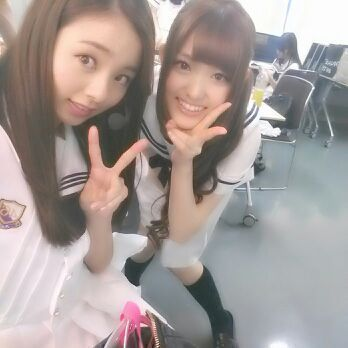
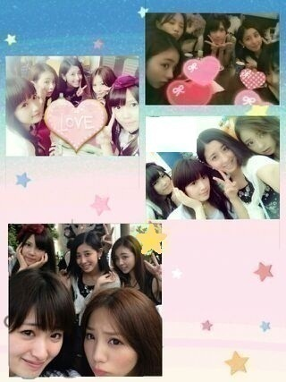

今日も１日
おつかろってぃん (・ω・)☆ミ
ろってぃーです！

さゆりんと\(^_^)/
今日は お台場合衆国 でした-☆
〜セットリスト〜
1,ガールズルール
2,走れ!bicycle
3,扇風機
4,おいでシャンプー
5,制服のマネキン
6,世界で一番 孤独なLover
7,君の名は希望
8,乃木坂の歌
８曲 40分のステージを
やらせて頂きました ！
また今年も よんで頂けて
本当に嬉しいです＼(^-^)／
来年もまた お台場合衆国で
乃木坂46のステージがあります様に...
ファンの皆さんも
盛り上がってくださり
本当にありがとうございました ！！
暑かったけど
体調の方とかは大丈夫ですかあ？？
水分こまめにとってくださいね♪
暑くてお箸すすまないな〜
って思ってもしっかり食べる様に
してます！！
それが 元気の源さっ(^_-)☆キラン
ぴょん！
・・・・・・・・・・・・・・

ほんでねぇ〜、
ディズニーランドの話なんですけど〜
5人で、朝１から並んで
最後までいたんだよ〜＼(^o^)／
握手会だったから
京都から帰ってきてすぐぅ〜、
あたしら 元気かっつーの(/∨)/笑
本当 夏のいい思い出ができました☆
乗り物も10こ以上乗りました^^
天気よくって
めちゃめちゃ暑くて
5人で 汗かきながら
１日中 歩き回ってました ^^/
こうやって、
苦労しながら めちゃめちゃ
楽しんだってのが
逆に すごい思い出に残ったりも
するんですよね(^^)v
5人で めちゃめちゃ
ワイワイしてきましたよ！！
ずっと喋ってた( ☆∀☆)わら
ディズニーの
アイスやら ジュースやら
ワッフルやら ポップコーンやら
うどんやら お肉やら...
もおいちかった /
晩ごはんは 大好物 カレーちゃん。
皆 ラージサイズを頼む元気っこちゃん ☆
でも...
誰一人食べきれてなかった^_^チーン
皆で ずぶ濡れになったり、、
かずみんが喉で
誰か飼ってることを発覚したり、、
色んなことがあったよ (>∨<)
忙しくて全然行けてなかったから
5人のスケジュールが
あってよかったです\(〃∨〃)/
我々『チームD☆』って
言うんでよろしくお願いいたします。
ではではっ、
明日は 横浜にて握手会であります。
是非とも よろちくであります(・ω・)
最高に楽しみです！
おやすみなさい♪のし